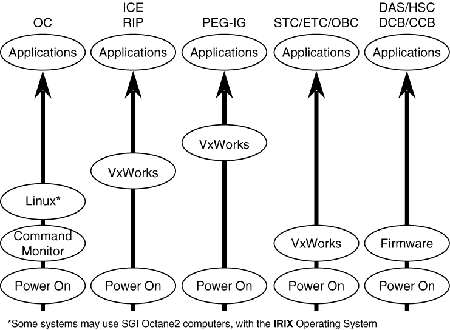

Operating Documentation
Direction 5114045-800, Rev# 10
LightSpeed 4.X Service Information (Advanced)
Operating Documentation |
Illustration 1: Host Architecture

Illustration 1 shows the CT system’s computers and communications paths used to control system operation. The serial, LAN, CAN, VME bus, and slip-ring communication paths shown are also used to distribute and bring up software during the boot-up process. Illustration 1 also shows that several different software operating systems are used by the variety of computers in the system.
Illustration 2: Hosts Operational States

Illustration 2 shows that as the system is brought up from a power-off state, the computer’s transition through several levels of operation to load their specific operating system and CT application software.
The specific levels of operation are commonly referred to as the Command Monitor, Linux (or IRIX, on Octane systems) and Applications levels from the perspective of the OC computer. Each level of operation provides different service capabilities. For service purposes, it is necessary to operate the system at each level.
Table 1 describes the software distribution and boot-up process from power-up to applications.
Table 1: Auto Boot-up Sequence
| OC | ICE | PEGASUS IG | STC/ETC/OBC | DCB/CCB |
|---|---|---|---|---|
| 1. Power up diagnostics | 1. Power up diagnostics | 1. Power up | 1. Power up diagnostics | 1. Power up diagnostics |
| 2. Boot Linux (or IRIX) from OC disk | 2. Wait for serial input activity | 2. Wait for ICE boot-up | 2. Attach ROM resident VxWorks. Wait for input on LAN | 2. Wait for input on CAN Bus |
| 3. Start CT Applications software | 3. Load VxWorks and applications software via the LAN | |||
| 4. Find and initialize the Pegasus IG Board. | 3. Boot VxWorks off of ICE | |||
| 4. Start up Artesyn controllers via the Table/Gantry LAN | 4. Apps load through the ICE | 3. Applications firmware downloaded and started | 3. OBC initializes via CAN bus | |
| Applications start-up complete | ||||
Linux/UNIX allows many users with many different programs to share the CPU and memory. This is done by time-sharing all the resources. Every task done is a PROCESS, and every time any user starts a new task, the system starts a PROCESS and gives it a unique process ID that will identify the program. Some processes are started on power-up and run all the time. One process might start another process, which then becomes the CHILD process. The process that started the child is the PARENT process. When a program has finished its task, it must shutdown all the processes. Child processes and parent processes must be TERMINATED. This will free up all the memory and close all the files that were used by the process.
Linux/UNIX is always running several programs in the background. The most important one, the KERNEL, is the heart of the operating system itself. It is loaded into memory on startup, and will stay in real memory all the time Linux/UNIX is running. The kernel is the “minimum system” that is needed to run any operating system. It assigns memory for each program that is running and allocates the time for each program to use the CPU, often refereed to as a “time slot”.
Any program or process has the CPU for the maximum time of 1 second. If the process has not finished all its tasks, the kernel will swap the process out of memory and give the next process access to the CPU. If the active process needs data that is not directly accessible from real memory, then it goes to a WAITING state, which will signal the kernel to start another process that is ready to run. If the program itself determines it has nothing to do-that is, if it waits for another process to finish or give it some more data to work on-it “goes to sleep”. Each process and the state of each one can be listed with the ps command.
The kernel will also handle all input and output requests (I/O) to disc drives, printers, network and terminals. The kernel will also use parts of the disc as VIRTUAL memory. This is called the SWAP partition. When a process requests data from memory, the kernel determines if the address is REAL or VIRTUAL. In the latter case, it then needs to copy the data from disc to real memory before letting the process continue. The kernel is “custom built” for the hardware that makes up the computer. Before turning off power to the system, Linux/UNIX has to move all the data for all the processes to disc drive and stop all active processes. This is done with the shutdown command.
Most “panic” messages on the terminal are from the kernel. If it gets a request to do something that it cannot handle, then the kernel will often just halt the system by stopping the CPU. A “kernel abort” message could be caused by faulty hardware or a bad program. The next time the system boots, Linux/UNIX will recognize something went wrong and if the power has not been turned off, the “bad program” will still be in memory and the system will try to copy all the data in memory and the register data to a file on the disc drive. This is the CORE file dump, and you can get a file that will take up 100 MB or more.
Many small programs are needed to handle utilities such as mail, printing, keeping track of the time and networking to other systems. These are commonly known as the DAEMONS. Each one can be started by the kernel, and wake up to do its task on demand. When it is finished, it will go to sleep and wait until it is needed again. Most daemons are well behaved watch dogs and will do their job without ever complaining. If they fail, then we get aborts and core files, which are quite similar to the kernel aborts. In either case, Linux/UNIX will try to inform you about what happened by sending a message to the boot terminal and enter some text in the system error log.
The system has several accounts. The most commonly used account is “ctuser,” which is automatically logged in on power-up. All the accounts are listed within the /etc/passwd file. To display the most used accounts, enter the following:
ctuser@msecrp1}[7] more /etc/passwd
... (This is an abbreviated list)
root:Q87bSMq1pevEM:0:0:Super-User:/:/bin/csh
ctuser:f8QFGFmn93MaQ:100:100:Advantage Windows Home Account:/usr/g/ctuser:/bin/csh
genesis:f8QFGFmn93MaQ:100:100:Advantage Windows Home Account:/usr/g/ctuser:/bin/csh
insite:osDybj5bv8LjQ:101:101:Insite Account:/usr/g/insite:/bin/csh
{ctuser@msecrp1}[8]
On each line there are seven fields separated by a colon (:). The first field is login name, and the second field is its encrypted password. All the fields are explained in the man page for passwd. User accounts and passwords are listed in the table below.
Table 2: Accounts and Passwords
| USER | PASSWORD |
|---|---|
| ctuser | 4$apps |
| root | #bigguy |
| genesis | 4$apps or genesis |
On the upper left of each monitor there is a programs folder. The programs folder includes a [CONSOLE] shell icon, and any shell icons that were started that have been minimized (iconified).
Console shell: The [CONSOLE] shell logs general output (debug type messages) from processes started during Application Startups and Shutdowns.
Illustration 3: Program Folder

The process to move the program folder forward is as follows:
<ALT> + <F3> to bring the folder forward (foreground).
Double click an icon to open (processes shown as icons).
Click on the (o) in the upper right corner of the shell to close.
Click on the (-) in the upper left corner of the shell and select exit to dismiss.
Illustration 4: Toolchest Menu

The Toolchest menu resides in the upper right-hand corner of the desktop on both the left and right display heads. It is accessible either when the system is at IRIX level only or when Applications are up. The Toolchest has three functions: [AUTOVOICE VOLUME] , [CHECK SECURITY] , and [UNIX SHELL] .
[AUTOVOICE VOLUME] - When selected, opens up a tool for the user to adjust the volume contol for Autovoice.
[CHECK SECURITY] - A function used to force a read of the security key to gain access to applications appropriate for that key. This is useful when installing a key after Applications are up, rather than waiting for the system (sidney process) to read the key.
[UNIX SHELL] - When selected, opens up a shell tool at the OC prompt for entering commands. UNIX shells are started in a X-Window environment.
Sometimes the Toolchest is in the background. You can switch it to the foreground or background windows with the key strokes <ALT+F3>.
The Verify Security feature reads and reports the level of security allowed by the key that is installed or not installed. This feature also reports the date the key will expire. The Verify Security function can be used to verify the system is properly reading the key.
The [ VERIFY SECURITY] command resides in the Service Desktop, under the [UTILITIES TOOLS] tab. Security can also be verified by typing: test_check_security -v <ENTER> within an Unix shell.